/* minor-white - proofs */
11 plates. Deterministic overlays rendered by the composition-analysis skill.
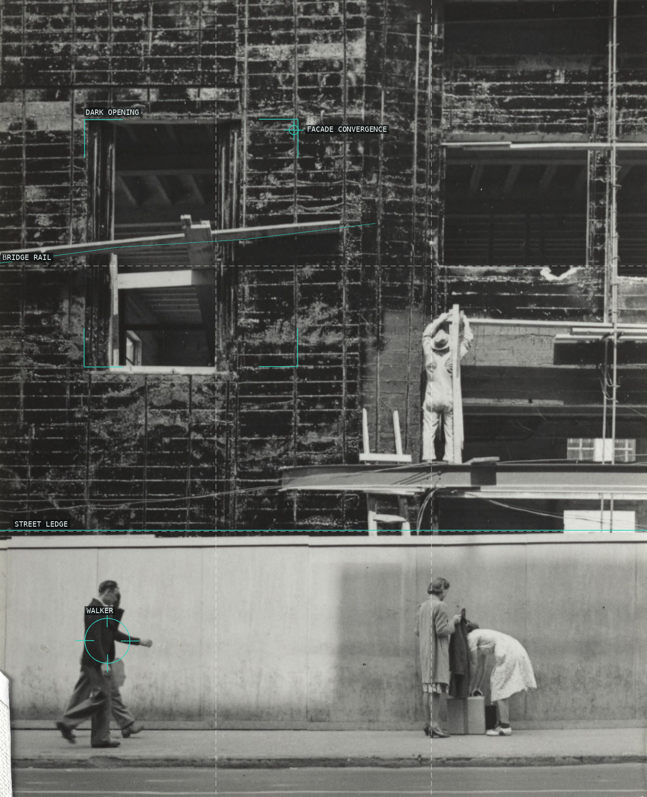
01-portland-1938
A rigid facade and bridge rail compress incidental figures into a shallow public stage.
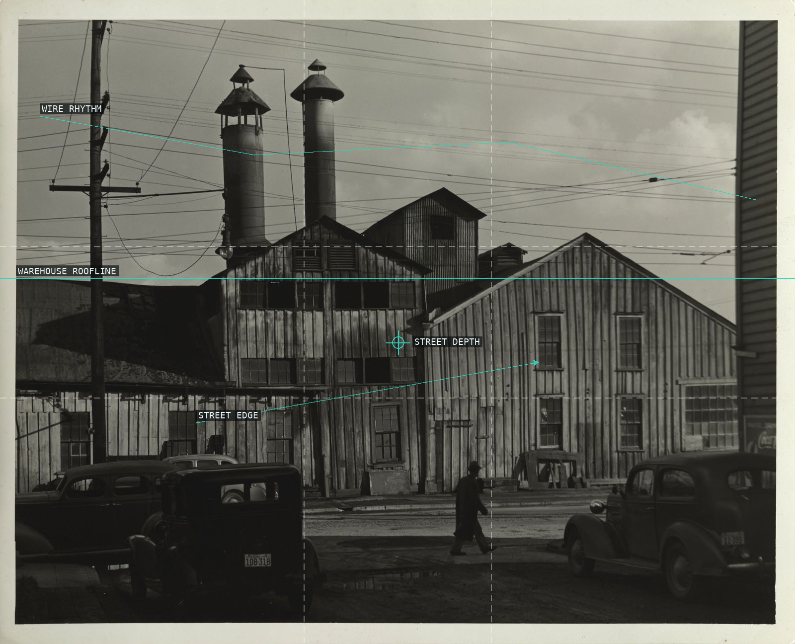
02-water-street-portland
Wires and rooflines make a deep street while the plant silhouettes hold its center.
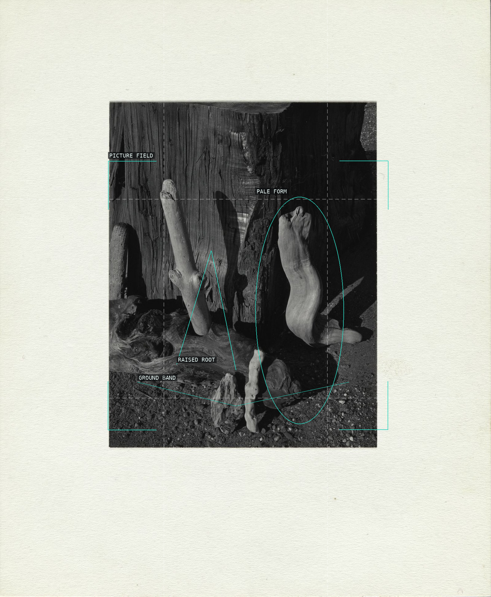
03-navarro-river-california
A dark field turns roots and pale upright forms into an unstable natural abstraction.
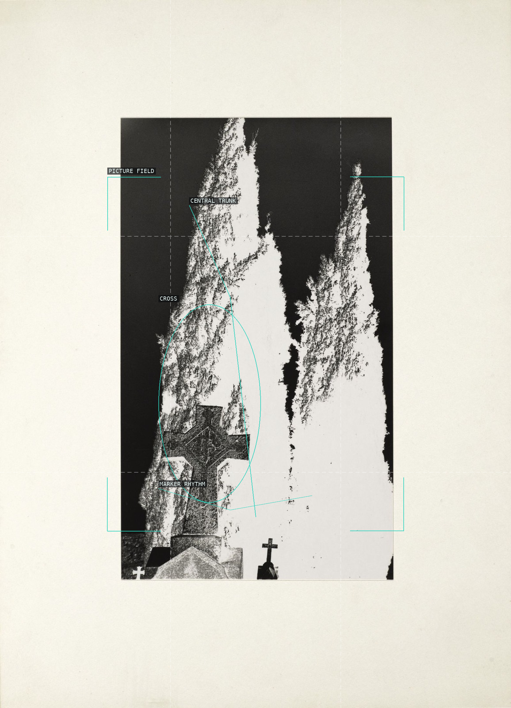
04-jackson-california
A cross and dark verticals turn a cemetery view into a severe, uneven rhythm.
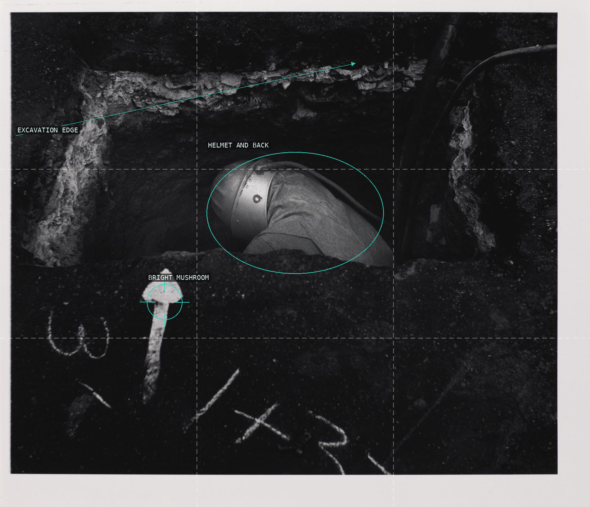
05-sandblaster-san-francisco
A worker's curved back is enclosed by excavation, with one bright foreground interruption.
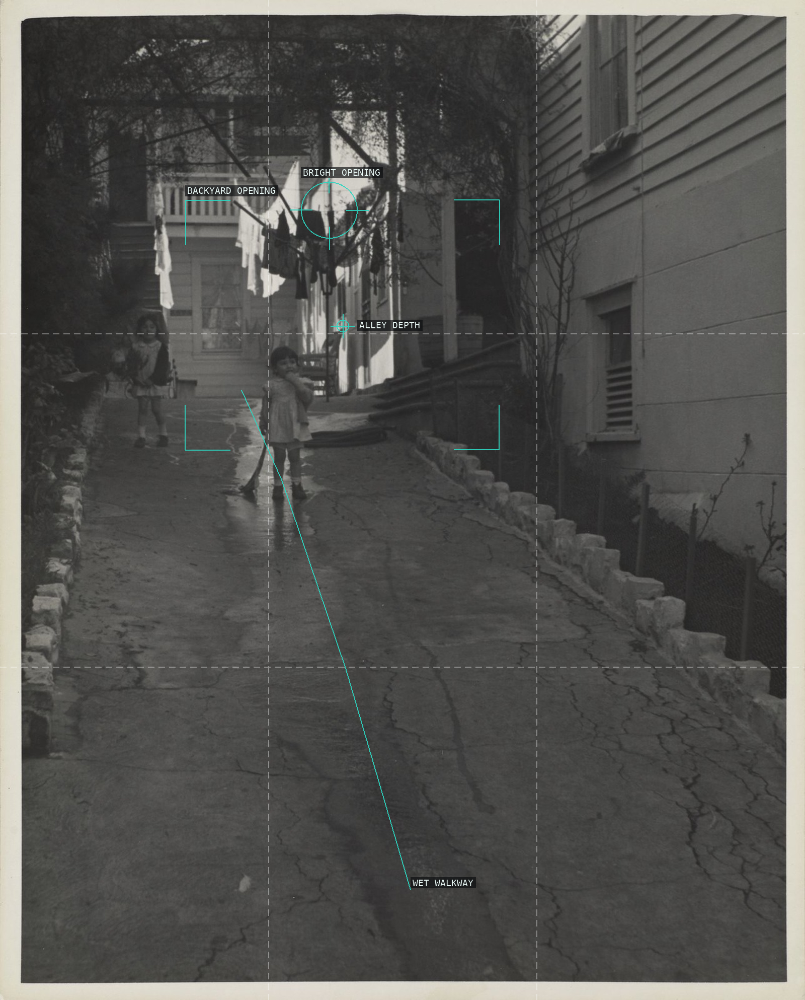
06-mission-district-san-francisco
A wet alley narrows toward a child while house edges make the ordinary space feel threshold-like.
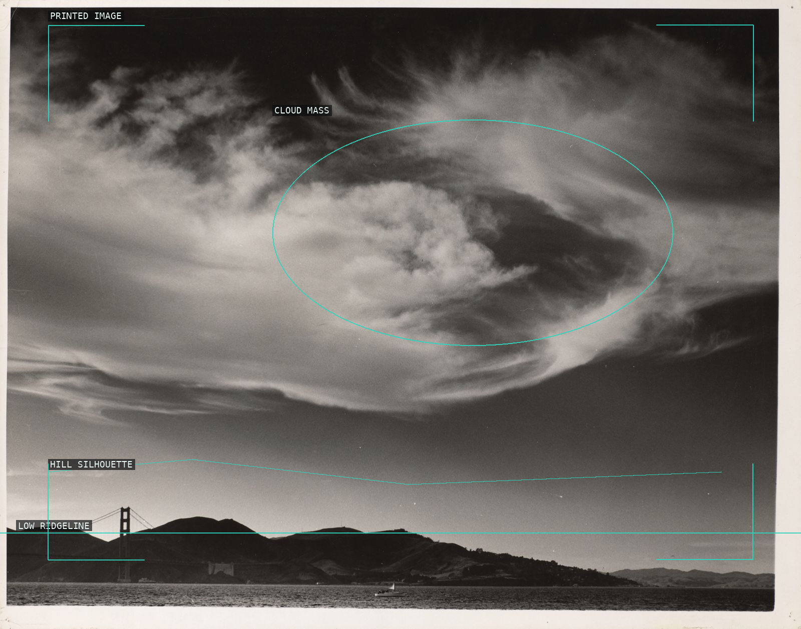
07-golden-gate-bridge-san-francisco
The bridge is a small structural counterweight beneath an expansive, directional cloud.
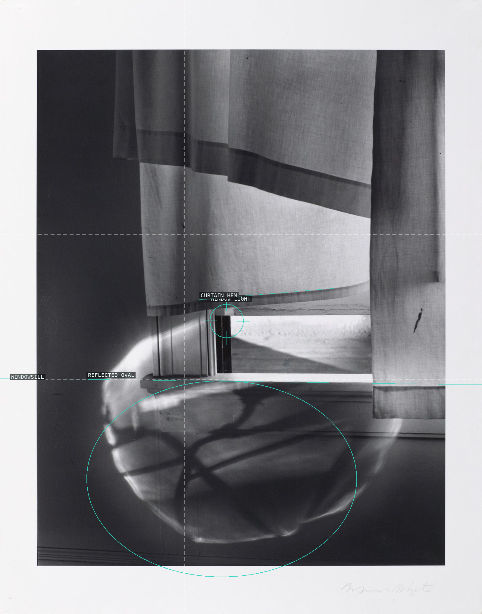
08-windowsill-daydreaming
Curtain, sill, and a reflected oval make a domestic window behave as a luminous abstraction.
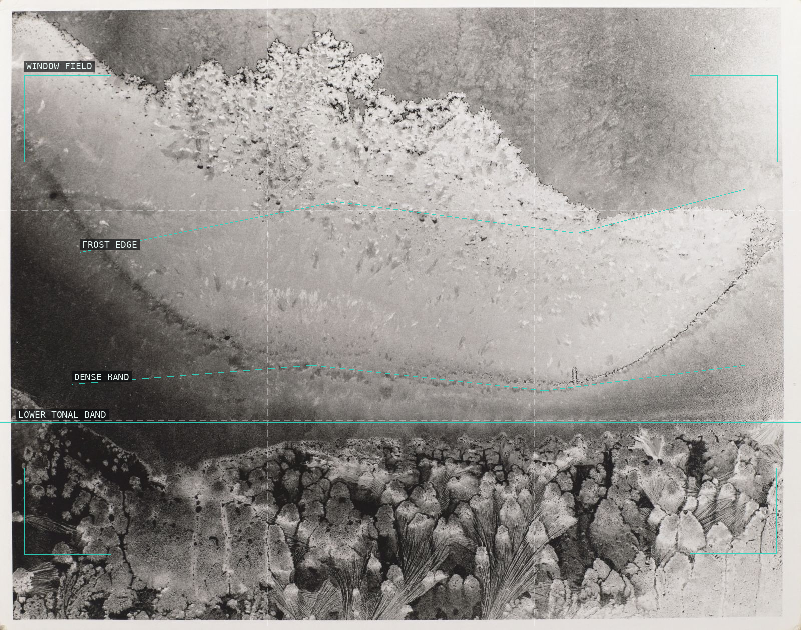
09-frosted-window
Frosted strata make the window an all-over tonal field rather than a view through glass.
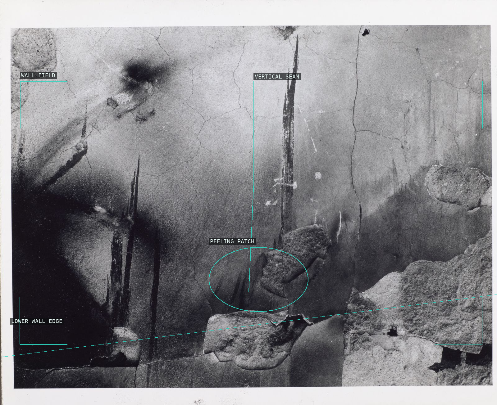
10-santa-fe-new-mexico
A seam and a peeling patch create the wall's small but decisive internal shift.
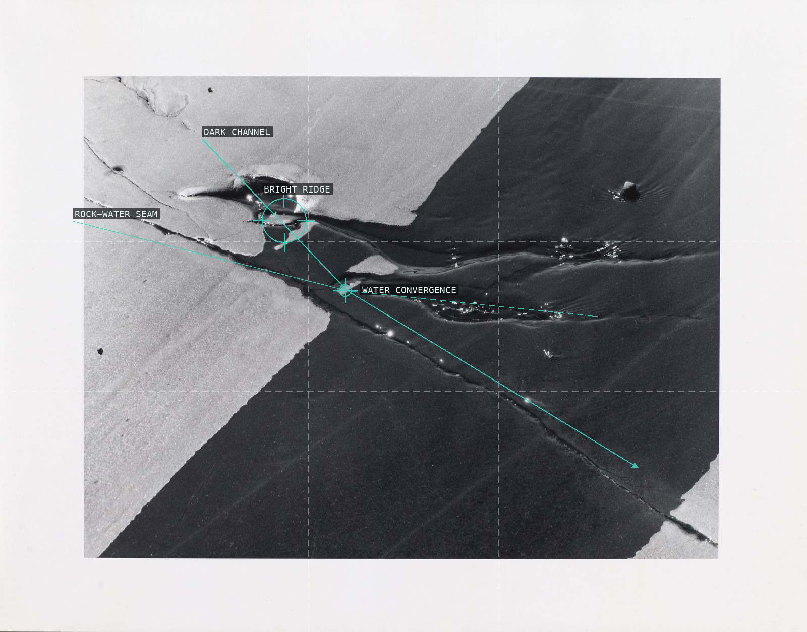
11-schoodic-point-maine
Rock and water meet in a handful of directional edges and sharply weighted dark pools.